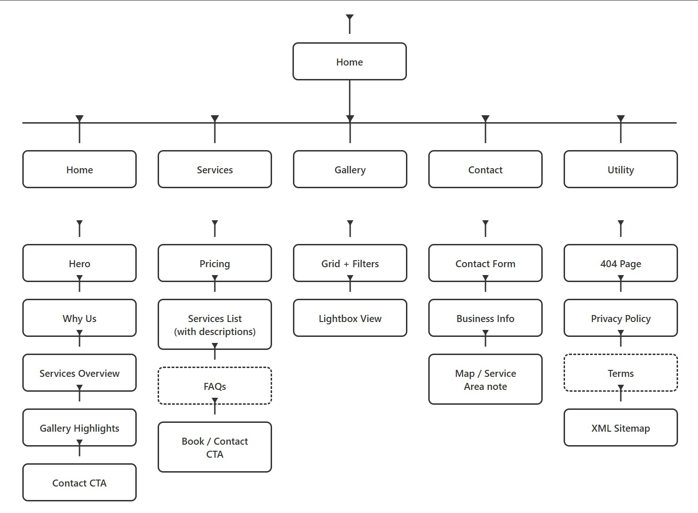

Case Study — Freelance · Scotland
A pet care business in the Scottish Borders had no online presence to match the quality of the service. I designed, built, and launched a full website solo — across an ocean, in 2024.
Pawesome Adventure Walks is a pet care business based in the Scottish Borders. They offer dog walking, adventure walks, and pet sitting — the kind of small local service that lives or dies on word of mouth and trust.
By 2024, the business had a loyal client base but no online presence. New customers had no easy way to verify the service was real, see what walks looked like, or get in touch. The job was to build a website that matched the quality of the service.
"We need a website. Make it feel like the walks do."
— Pawesome, 2024
Designer, developer, SEO, and project manager — all in one. Working remotely from San Diego with a client in Scotland meant fewer meetings and tighter feedback loops. The whole thing had to ship as one cohesive product, not a handoff.
"A small business website doesn't need to be flashy — it needs to be findable, trustworthy, and easy to book from a phone with one bar of signal."
Before any design, I mapped every page and how a first-time visitor would move through them. The goal: someone landing on a service page should be able to book or get in touch without ever scrolling back to the nav.

Full site map — home, services, gallery, about, contact, and booking flow
The site is live at pawesomekelso.vercel.app. Mobile-first responsive, with a real photo gallery, embedded maps for the walking routes, and a contact path that works on patchy rural signal.
A small business in rural Scotland now has a website that matches the quality of the service. Designed, built, and launched solo — discovery to deploy.
Visit pawesomekelso.vercel.app ↗1
Designer + developer + SEO — discovery through deploy
Mobile
Mobile-first responsive — works on patchy rural signal
8,580km
San Diego → Scottish Borders. Async, transatlantic delivery.